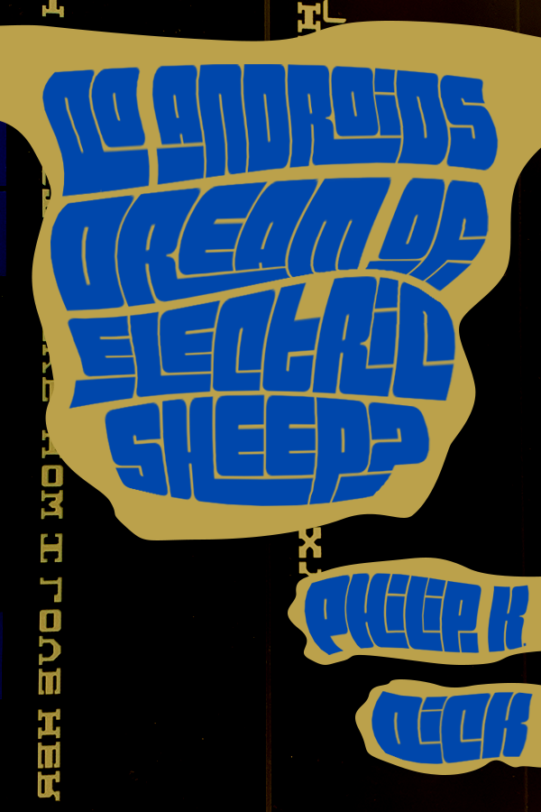
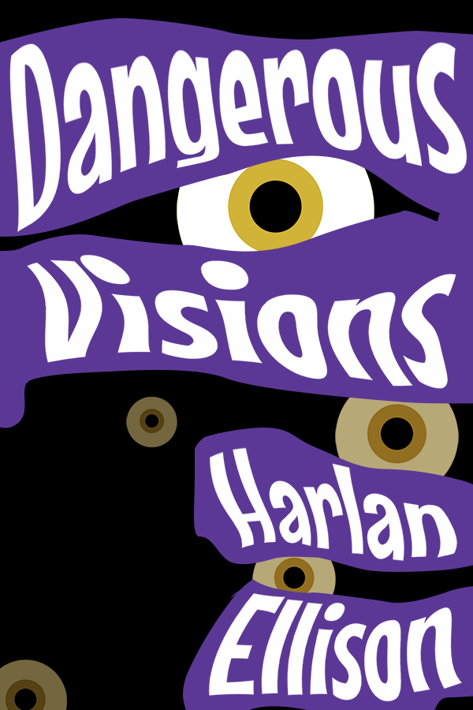
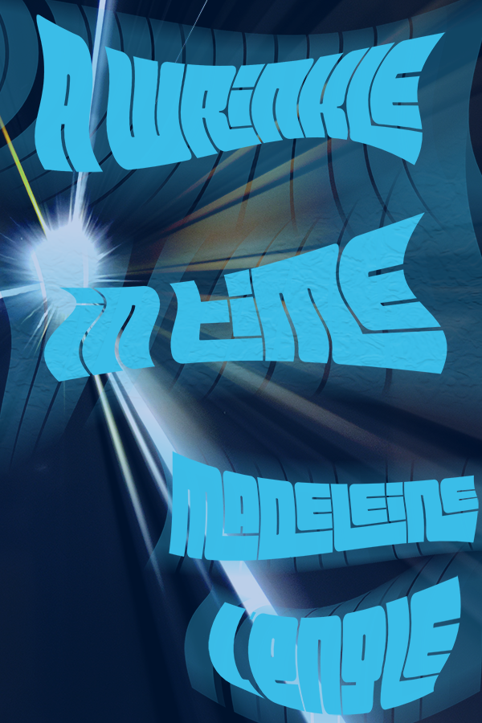
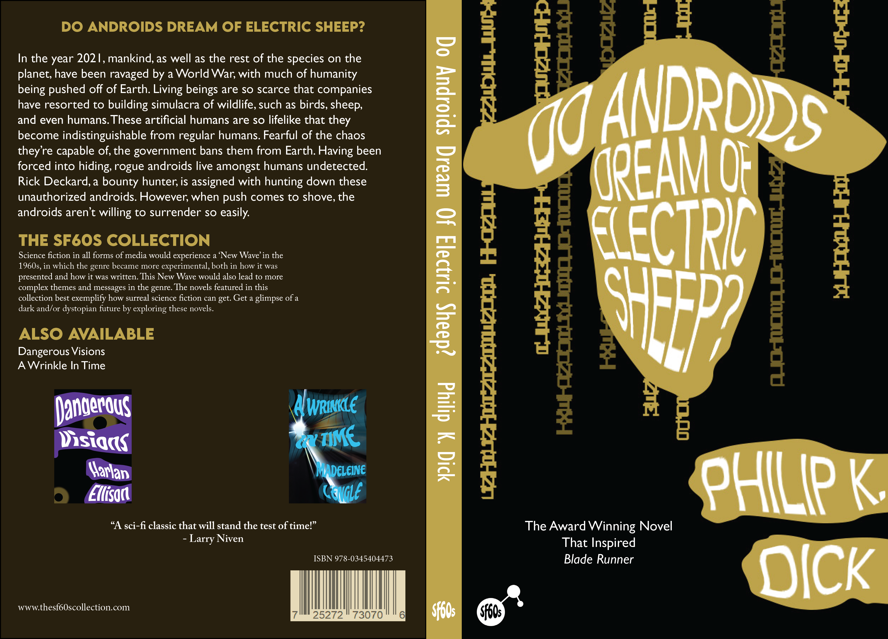
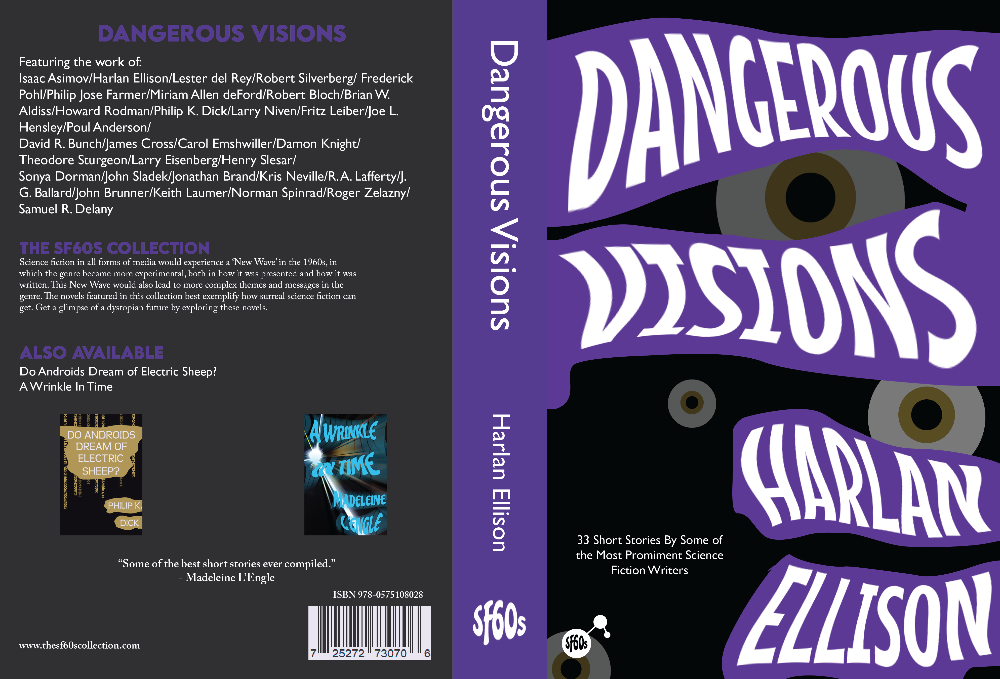

These three covers were made as a project focusing on
design for a series of books. Being a fan of 1960's
aesthetic, I chose 1960's sci-fi, as the genre took off
in that decade.
The Right Foot In The Door
  When making the mockups, I primarily took inspiration
from the wavy styling the 1960's used in graphic design,
such as the original cover for one of the books I chose,
Dangerous Visions. Some of the concepts still needed
ironing out at this phase, especially Do Androids
Dream of Electric Sheep.
The Finish Line
 
The final covers do a much better job at conveying the plot
or themes of the books than the mockups do, though
Dangerous Visions, being an anthology, could still have
some trouble when it comes to identifying what the book is about.